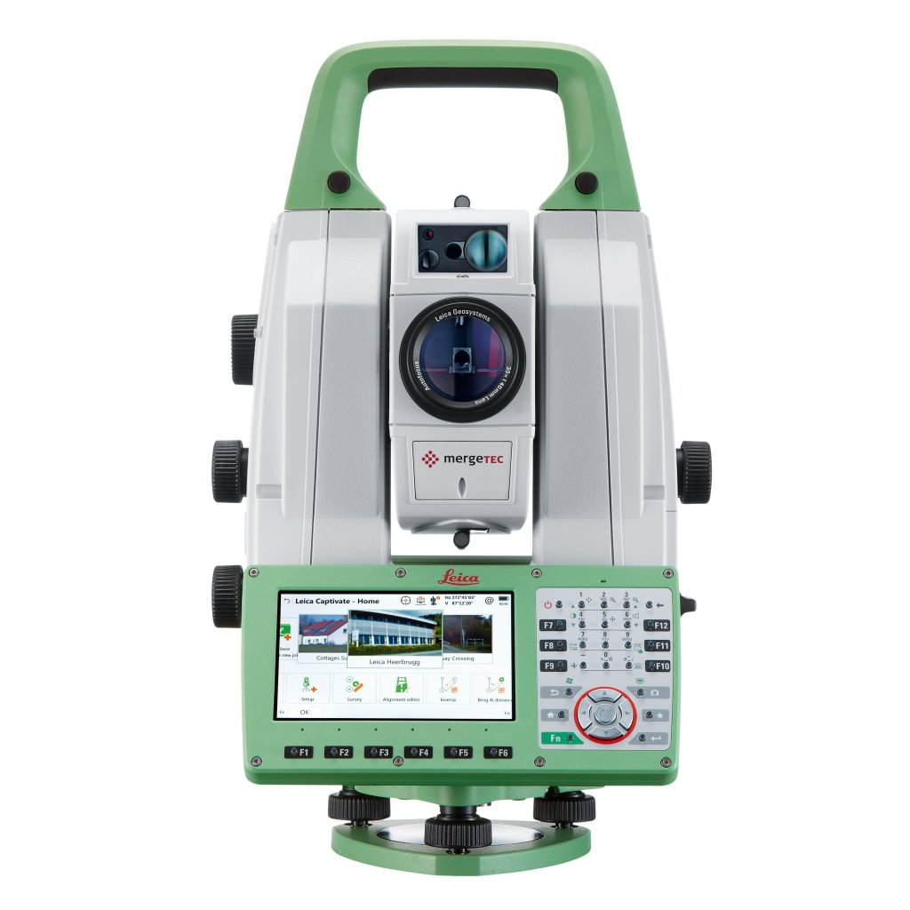
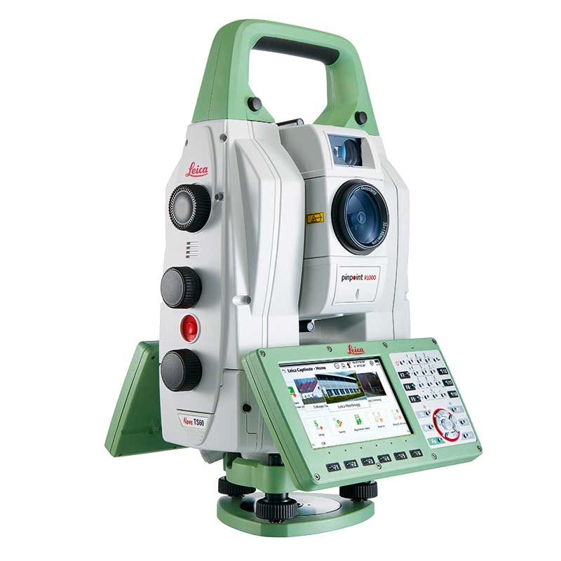
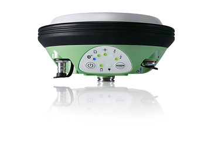
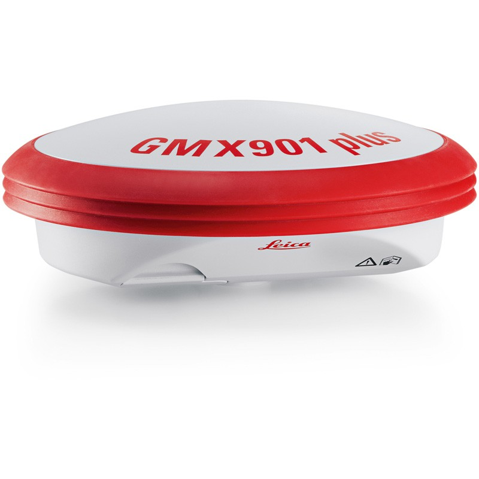
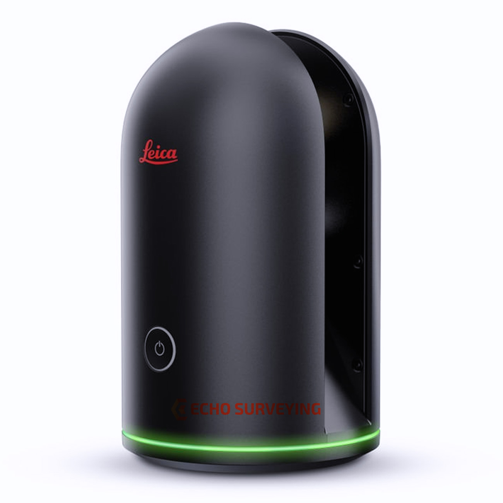
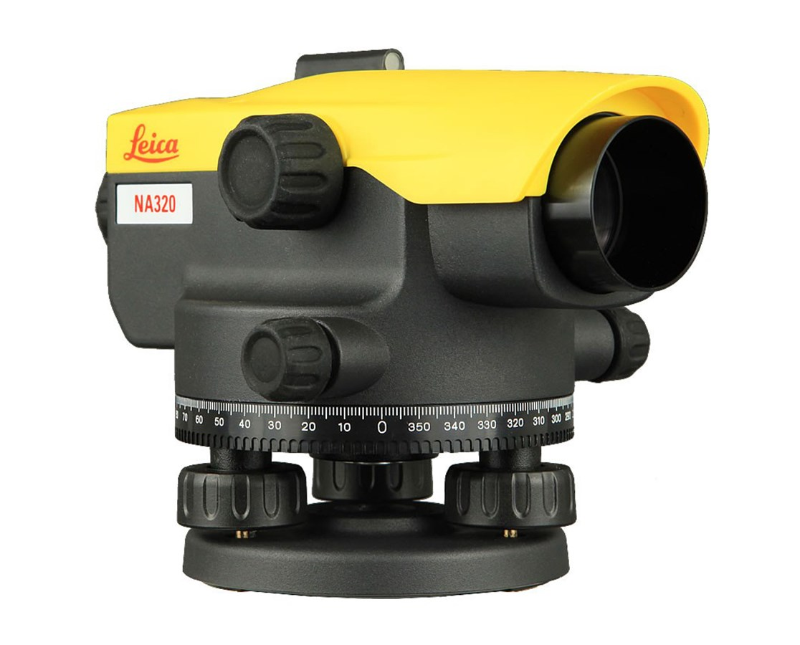
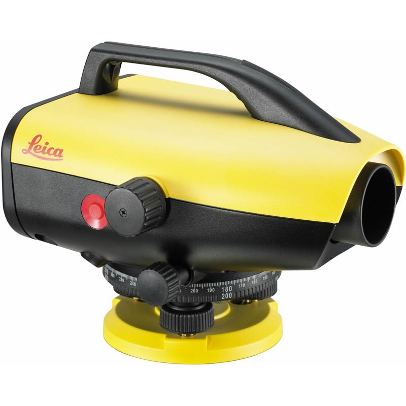
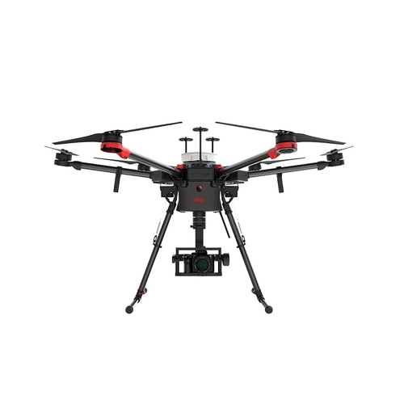

Leica Nova MS60 MultiStation - For all your measurement tasks

The new version of Leica Nova MS60, the world’s first MultiStation, enables you to perform all
surveying tasks with one instrument. It brings sensor fusion to the next level by combining:
Highest-end total station capabilities
3D laser scanning, enabling you to scan up to 30’000 points per second
GNSS connectivity
Digital imaging
The MS60 comes with Leica Captivate, an onboard software with easy-to-use apps that cover all your
surveying tasks. To make your work even more productive, you can benefit from the MS60’s Dynamic
Lockfeature as well as the newly added, revolutionary setup assistant feature,Autoheight Feature
which helps you setup even faster and more accurately with the simple press of a button.
When to use the Leica Nova MS60:
Surfaces and volumes in construction and mining: spoil heaps and stock piles, DTM
creation and checking surfaces, material thickness, blast faces and ground levels.
Analysis of complex structures and objects within plant, marine and utility projects:
dimensional control, as-built and record keeping
Measuring buildings and structures: bridge condition/clearance analysis, BIM and
as-built
Façade, elevations and heritage work: creation of traditional façade deliverables, 3D
models and photographic documentation
Traditional topographic surveys for surveying and mapping: creation of traditional
deliverables like 2D maps or 3D models
Monitoring measurement and analysis of ground and structures: real-time or periodic
measurement of bridges, dams, buildings and earth, ice and snow
Leica Nova TS60 – World’s most accurate total station

The new Leica Nova TS60 total station is the world’s most accurate total station, designed to tackle
your most demanding projects. The ground-breaking angular accuracy of 0.5” (sub-second) and distance
accuracy of 0.6mm + 1ppm (sub-millimetre) enables you to work at the same high performance levels,
even in the harshest of conditions. Be it in rain, fog, dust, sun, heat shimmer or reflections, the
TS60 offers the fastest re-lock in case of an interrupted line of sight.
The new TS60 comes with Leica Captivate, an onboard software with easy-to-use apps that covers all
your measurement tasks. It helps turn complex data intuitively into the most realistic and workable
3D models. To make your workflow even more productive, the Dynamic Lock functionality is now
integrated into the TS60 - it automatically locks onto moving prisms, eliminating the need for
standing around and waiting. Setup your instrument faster with the revolutionary AutoHeight
feature;simply press a button and start working on your next project.
When to use the Leica Nova TS60:
Highest accuracy for stakeout tasks in construction projects: stakeout design data,
guiding pre-fabricated elements to the right position
Reference network measurementsfor construction and infrastructure projects: define the
reference network frame with precise angle and distance measurements
Measuring buildings and structures: bridge condition/clearance analysis, BIM and
as-built
Checking pre-fabricated elements in shipbuilding and for wind turbines: as-built checks
and dimension control
Monitoring measurements: permanent or campaign monitoring of bridges, buildings and
steel structures
Control of slab track installation and clearance surveys of railways
Self-learning total station
The TS60 delivers the best measurement performance by automatically and continuously adapting to site
conditions, be it rain, fog, dust, sun, heat shimmer or reflections.
GNSS Systems
Leica Viva GS14 – GNSS Smart Antenna

The Leica Viva GS14 is a compact and powerful GNSS smart antenna, suited for any measuring task with
integrated mobile communications and UHF modem. The Leica Viva GS14 is easy-to-use with its
convenient and integrated design.
This smart antenna is your all-around GNSS instrument for professional reliability when you need the
most demanding accuracy. The Viva GS14 is designed to perform wherever, whenever you need.
The Viva GS14 also delivers with:
Easy-to-use software
The Viva GS14 smart antenna is equipped with the intuitive Leica SmartWorx Viva software. With clear
graphics, practical menu structures, understandable terminology and simplified workflows, save time
and effort on any site. SmartWorx Viva is incredibly easy to learn and use.
Infinite possibilities
While SmartWorx Viva captures data in the field, Leica Infinity software processes the information
back in the office. A smooth data transfer ensures the project stays on track. SmartWorx Viva and
Infinity work in conjunction to join previous survey data and edit projects faster and more
efficiently.
Customer care at a click
Through Active Customer Care, a global network of experienced professionals is only a click away to
expertly guide you through any problem.
Eliminate delays with superior technical service
Finish jobs faster with excellent consultancy support
Avoid costly site revisits with online service to send and receive data directly from
the field
Control your costs with a tailored Customer Care Package, giving you peace of mind you’re covered
anywhere, anytime.
Powerful handheld devices
In a controller or a tablet, take your entire office on the go when you discover the power to
overcome any environment from the palm of your hand. The Leica CS10 and CS15 controller provide the
ultimate in control and convenience with complete mobility.
Leica GMX910 Smart Antenna

With limited budgets, monitoring equipment now has to do a lot more for a lot less. The Leica GMX910
offers monitoring specialists a smart, flexible and cost-effective antenna, equipped with high-end
GNSS technology. From static long-term to dynamic high-frequency projects, the GMX910 exceeds
monitoring demands – today and tomorrow.
Versatile monitoring all-rounder
The Leica GMX910 is a dedicated monitoring smart antenna designed for continuous operations. Built
with flexibility in mind, it is adaptable and upgradable. Monitoring professionals of critical
projects can easily create an antenna that suits their needs. From static long-term to dynamic
high-frequency projects, the Leica GMX910 is an all-in-one performer.
Future-proof GNSS technology
Exceeding GNSS signal needs today and tomorrow by supplying 555 GNSS channels, the Leica GMX910
monitoring receiver is future-proof, reliably delivering the highest quality results 24/7. It is an
affordable, high quality antenna equipped with cutting-edge GNSS technology. Specialists are
guaranteed timely and accurate information on the status of sensitive structures to detect and react
to potential problems.
Monitoring solution
Fully integrated in the Leica GeoMoS deformation solution, with seamless connection to Leica GNSS
Spider, professionals have one provider for all their monitoring needs. The Leica GMX910 can be
easily combined with various monitoring sensors and softwares. Streaming highly reliable GNSS data
around-the-clock to monitoring applications of critical man-made or natural structures enables those
responsible to have peace-of-mind.
Laser Scanners
Leica BLK360 Imaging Laser Scanner

The Leica BLK360 captures the world around you with full-colour panoramic images overlaid on a
high-accuracy point cloud. Simple to use with the single push of one button, the BLK360 is the
smallest and lightest imaging laser scanner of its kind. Anyone who can operate an iPad can now
capture the world around them with high resolution 3D panoramic images.
Using Leica Cyclone FIELD 360 mobile-device app, the BLK360 streams image and point cloud data to an
iPad or final project data to Cyclone REGISTER 360 or Cyclone REGISTER 360 (BLK Edition) via Wi-Fi.
With automated workflows in both software offerings, the BLK360 plus the software solution of your
choice, dramatically streamlines the reality capture process thereby opening this technology to
non-surveying individuals. Simple export of LGS or RCP files makes working with point cloud data
downstream in the Leica Geosystems and Autodesk suites simple and efficient, allowing users to spend
less time processing data and more time creating meaningful deliverables.
BLK360 imaging laser scanner
Allows you to scan in high, standard and fast resolutions
Weighs 1 kg / Size 165 mm tall x 100 mm diameter
Less than 3 minutes for full-dome scan (in standard resolution) and 150 MP spherical image
generation
360,000 laser scan setpoints per second
High-Dynamic Range (HDR) and thermal imaging
Software offerings to meet your needs
Upgrade your subscription to Cyclone REGISTER 360 for users who want to take on mid-to-large
scale projects involving additional data sources
Bundled with Leica Geosystems’ next generation of registration software, Cyclone REGISTER 360
for users who want to take on mid-to-large scale projects
Operate the BLK360 to automatically capture, register and examine scan and image data, directly
within the Cyclone FIELD 360 app from any iOS or Android mobile-device
Directly publish your captured data from Cyclone FIELD 360 to Leica TruView Cloud to quickly
exchange project information prior to import and registration
Levels
Leica NA300 Series Automatic Levels

The Leica NA300 Series of automatic (optical) levels has been developed for professionals who are
looking for the highest quality results day by day. With the many obstructions and uneven surfaces
on construction and building sites, the levels NA300 levels rise to the occasion and ensure the
straightest and safest construction possible.
The NA300 Series is your reliable partner for accurate measurements and high quality results:
Distinctive design and proven technology, inside and out
Leica Geosystems understands construction and provide levels for all needs
Protected shape for increased ergonomic handling while ensuring the highest quality results
Simple handling for quick and accurate measurements
Whether you’re facing basic demands or you need more support, the unique design of the Leica NA300
Series of automatic (optical) levels can meet you wherever you are in the building and construction
field. With a better protected shape, these rugged levels offer increased ergonomic handling while
ensuring you receive the highest quality results at the best price value.
Leica NA300 Series levels have been engineered for daily levelling tasks. Whatever the need, these
levels measure with the highest precision and accuracy. These automatic (optical) levels provide the
highest in both while being ergonomic in their handling and rugged for daily use in the harshest
conditions.
A perfectly designed mirror makes it extremely easy to adjust the horizontal level with the highest
possible accuracy and confidence. The Leica NA300 Series levels - along with all our automatic
(optical) levels - are made for everyday use for any site.
Service Centres worldwide ensure you work with complete peace of mind, wherever a construction site
is located on the globe. Leica Geosystems offers unbeaten service with all of its NA Series levels.
The IP54 standard ensures the highest quality measurements even in the most challenging
environments.
Leica Sprinter 150 Digital Level

High efficiency with precise calculations
Improve your efficiency with the automatic calculations of the Leica Sprinter 150 for delta height
and
tracking & monitoring. The digital level covers almost all construction applications such as cut &
fill,
line levelling and distance measurement. For continuous measurement choose the tracking and
averaging
mode for even more accurate results.
Convenient handling – multiple languages
Does your crew speak different languages? The Leica Sprinter is the only instrument of its class with
multiple languages on-board. This allows you to choose the preferred language – simply and with only
one keystroke, for improved efficiency and convenience.
The Leica TerrainMapper-2 is the latest linear-mode LiDAR airborne sensor providing the highest
performance for regional mapping projects. Thanks to gateless MPiA, the sensor system delivers
outstanding accuracy, unmatched point density and even point distribution even in mountainous
terrain. The system is designed to offer the maximum flexibility for all applications from
narrow-swath corridors to high altitude applications over complex and changing environments for the
delivery of highest fidelity data.
The TerrainMapper-2 includes a 2 MHz LiDAR sensor combined with two nadir 150 MP cameras in RGB and
NIR. With the integration of the most innovative optical system on the market this new LiDAR sensor
delivers high quality images with every flight. Even during long collection days and low sun angles,
the integrated camera will keep up with the LiDAR.
Seamlessly upgradable for urban mapping
The sensor can easily be upgraded with four additional oblique cameras turning the system into a 3D
city mapping machine. This configuration is known as the Leica CityMapper-2. The unique modularity
offers users a long-term upgrade path as their our business continues to grow.
Leica Aibot Aerial Data Capture Platform

As a complete workflow management solution, UAV technology allows you to process and analyse millions
of data points gathered from above and to visualise the data to provide actionable information. UAV
data can be combined with existing survey technologies, such as TPS, GPS, and laser scanning
providing a more complete set of information. By taking only minutes to survey a site, UAVs enable
the completion of projects at a lower cost and with fewer staff.
This flying platform is specifically designed for professional industrial applications. The modular
design makes this system easy to set up and ready to use in just minutes. The Leica AX20 includes
intelligent data asset management and trusted Leica Geosystems GNSS technology for highly accurate
data. The platform can be completed with various sensor payloads.
Complete Solution
The Leica Aibot provides a complete UAV solution for surveying, mapping and construction. It enables
fast data collection and an easy workflow that guides you through your project lifecycle providing
you quick access to critical information to perform your day-to-day work.
Strong Partnership
The UAV used for the Leica Aibot surveying and mapping solution is provided by DJI, the world's
leading manufacturer of UAVs. Together with Leica Geosystems, they build a strong partnership that
drives UAV adoption in the surveying and construction industries.
System Integration
Strong system integration plays a vital role in delivering aerial data capture solutions. By fully
leveraging DJI's innovative aerial devices with Leica Geosystems extensive expertise in high
accuracy measurement sensors, the full potential of UAV technology will be unlocked.
The Future Surveyor
Developments created by this partnership help those operating in the surveying and construction
industries who adopt the latest technology and software to help make the most informed decisions
possible. The future surveyor will make use of UAV technology.
Lasers
Construction Laser Receivers
Leica Combo Digital RF
Leica Combo is a receiver and a remote combined in one device. Save time and work conveniently with
offset and adjustable sensor window thanks to the new features in the Combo
Designed to last - IP 67
Anti-strobe feature assures highest detection reliability by rejecting strobe light
Leica Rod Eye 180 Digital RF - Top of the range receiver
Top of the range receiver with integrated radio remote functionality, digital readout, millimetre
accuracy and strobe rejection. Intelligence inside with Laserman, automatically aligning your laser
plane at the touch of a button – horizontal, vertical and dual axis. Monitor and correct the laser
plane in real time using Smart Lock functionality.
Smart Target - automatic slope catching and monitoring with radio communication
Digital readout - the large numbers are clear and easy to read
Capture function - allows the user to store and display a measurement